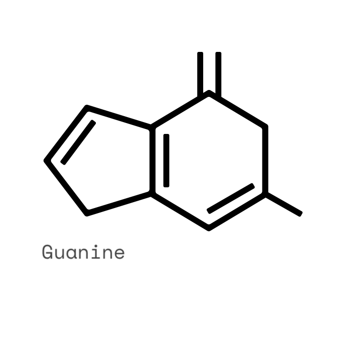
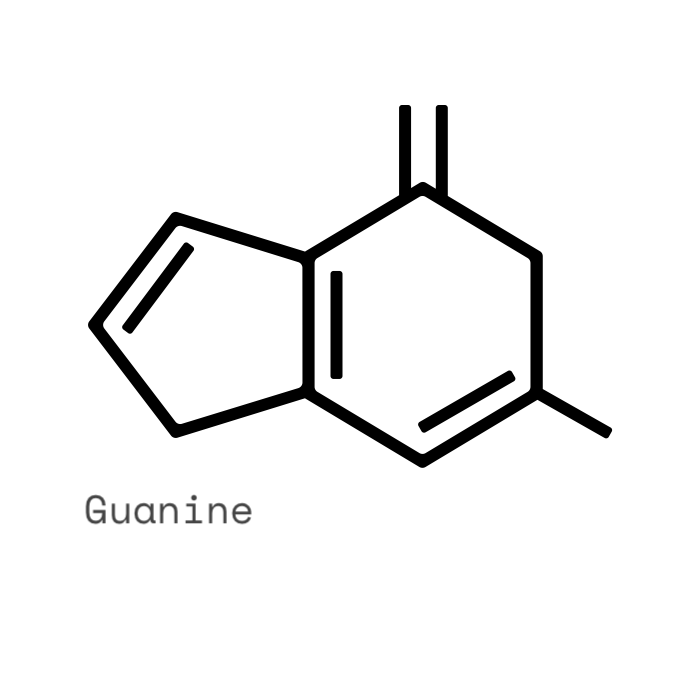
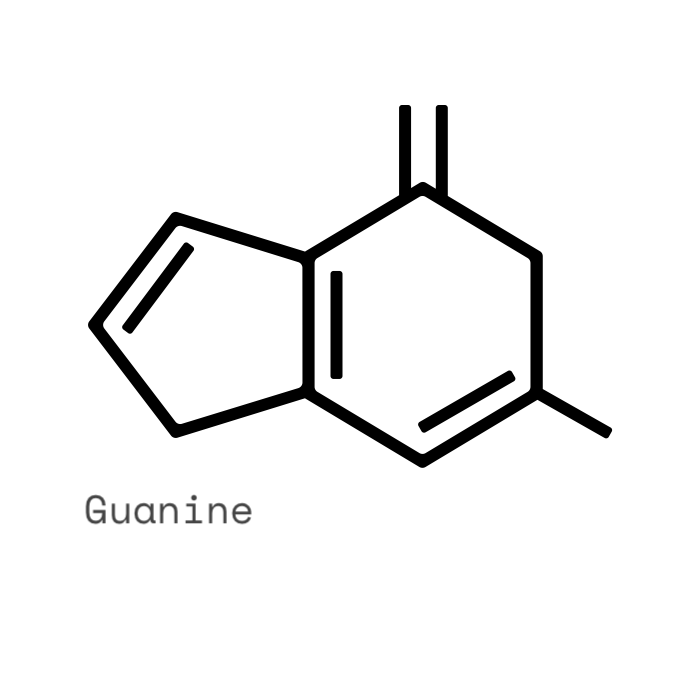
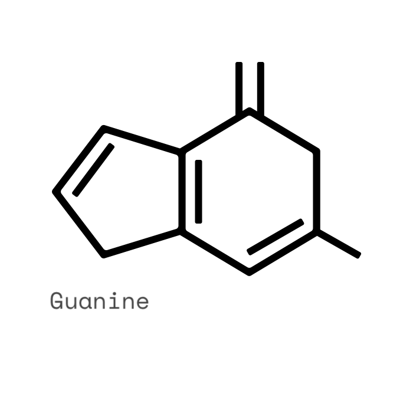

Each gene in a molecule of DNA contains:
In DNA, two strands coil together to form a double helix. There are chemical cross-links between the two strands, formed by pairs of bases.
Each strand of DNA is made of chemicals called bases. Do not confuse these with the bases you meet when you study acids and alkalis in chemistry. There are four different types of bases, shown as A, T, C and G.
Proteins are made in the cytoplasm of a cell, not in the nucleus. Genes cannot leave the nucleus, so a copy of the gene is needed. This copy is able to leave the nucleus to go into the cytoplasm so that proteins can be made by the cell.